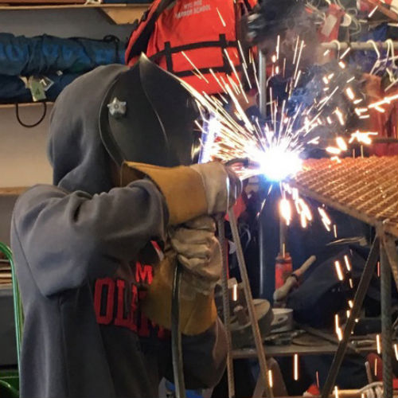
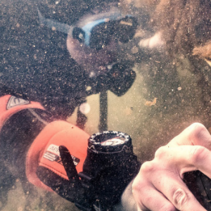
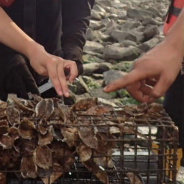
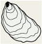
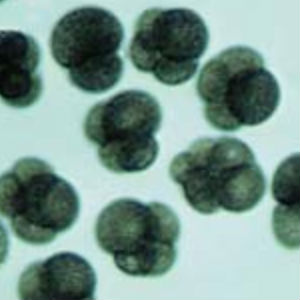
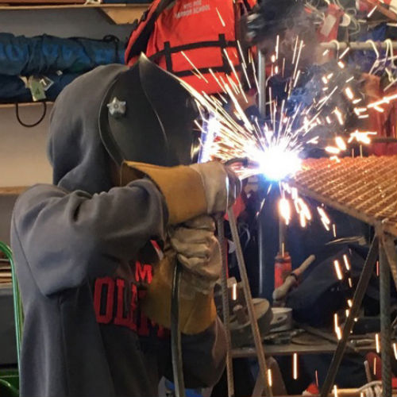
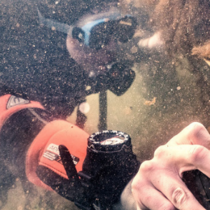
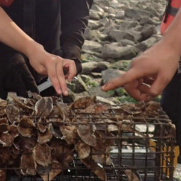
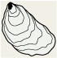
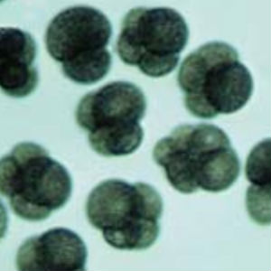

Osteria virginica is the species of oysters native to NYC.
At the New York Harbor School hatchery, 15 broodstock (parent) oysters can provide more than 100 million fertilized eggs.
BOP collects nearly 4 tons of shells from 45 participating NYC restaurant partners each week through its Shell Collection Program.
These reclaimed shells form the foundation for oyster lavae to set onto and a foundation for the oyster reefs.
After two weeks of eating nutrient-rich algae, the larvae cement themselves to reclaimed oyster shells. These metamorphosed larvae are known as spat on shell (SOS). They are grown in recirculating water in a flow-through aquaculture environment until they are large enough to survive life in the harbor.
Spat on shell is kept at one of the BOP nursery sites located on Governor’s Island and in the Brooklyn Navy Yard. The oysters are kept in a high water column where they are safe from natural predators. Oysters are kept in trays and are frequently rinsed to ensure adequate waterflow and access to waterborne nutrients necessary for growth.
The reefs are designed and constructed in conjunction with Reef Team project partners and The Nature Conservatory. Students from the New York Harbor School weld and construct the reefs on Governor’s Island.
The Professional Diving students conduct underwater mapping for new reef sites. Most NY Harbor restoration sites are full subtidal. Divers play a key role in building, maintaining, and monitoring reef sites.
NYC public school students, university students, civic scientists, and communities are engaged at their local waterfront collecting oyster and water quality data across all five boroughs.
 








